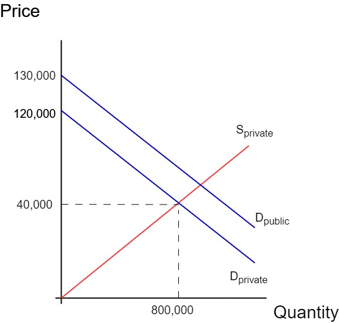

A company emits pollutants into the air, causing a negative externality. The marginal cost of production for the company is given by \( MC = 50 + 0.5q \). The marginal social cost, accounting for the pollution's externalities, is \( MSC = 50 + 1.5q \). The market price is constant at $75.
To determine the socially efficient quantity, set \( MSC = 75 \):
\( 50 + 1.5 \times q = 75 \)
\( 1.5 \times q = 25 \)
\( q \approx 16.67 \)
To find the company's production in the absence of regulation, set \( MC = 75 \):
\( 50 + 0.5 \times q = 75 \)
\( 0.5 \times q = 25 \)
\( q = 50 \)
The Pigovian tax rate is calculated by finding the marginal external cost at the socially efficient quantity:
\( MSC(16.67) - MC(16.67) = (50 + 1.5 \times 16.67) - (50 + 0.5 \times 16.67) \approx 16.67 \)
Therefore, the Pigovian tax rate required to achieve the socially efficient quantity is approximately \( \$16.67 \).
A local government is considering subsidizing a public transportation system to encourage use and reduce traffic congestion, which has positive externalities. The marginal social benefit (MSB) of the transportation system is given by \( MSB = 200 - 2q \), where \( q \) represents the number of users. The marginal private benefit (MPB), representing user demand, is \( MPB = 150 - 2q \). The marginal cost of operating the system is constant at 40.
To find the socially optimal number of users, set \( MSB = 40 \):
\( 200 - 2 \times q = 40 \)
\( 2 \times q = 160 \)
\( q \approx 80 \)
The quantity that occurs without any subsidy is determined by setting \( MPB = 40 \):
\( 150 - 2 \times q = 40 \)
\( 2 \times q = 110 \)
\( q \approx 55 \)
The subsidy per user required to achieve the socially optimal quantity:
\( MSB(80) - MPB(80) = (200 - 2 \times 80) - (150 - 2 \times 80) = 40 - (-10) = 50 \)
Thus, the subsidy per user required to achieve the socially optimal quantity is \( \$50 \).
Consider the market for college education in the United States. College degrees have become quite expensive in the U.S., but around 1 million people in the U.S. earn a degree each year. Suppose the yearly supply and demand functions for degrees in the U.S. are:
\( S(p) = 20p \)
\( D(p) = 1,200,000 - 10p \)
\( D(p) = 1,300,000 - 10p \)
Using this new demand curve, calculate the socially optimal price and quantity for a 4-year college degree.Set supply equal to demand:
\( 1,200,000 - 10p = 20p \)
\( 1,200,000 = 30p \)
\( p^* = \$40,000 \)
Substitute into the supply function:
\( Q^* = 20 \times 40,000 = 800,000 \)
Each person with a college degree creates an external benefit valued at \(\$10,000\). The social demand curve is shifted rightward by this external benefit.

DWL is present in the triangle bounded on the left by the quantity of 800,000, on top by the social demand line, and on bottom by the private supply line. Here, the market is underproducing the good, as buyers of college degrees do not take into account the external benefit their education produces.
With positive externalities, the government should use a subsidy to encourage consumption. The correct value for the subsidy is always exactly equal to the marginal external benefit: here, \(\$10,000\).
Using the social demand function \( D(p) = 1,300,000 - 10p \), set it equal to supply:
\( 1,300,000 - 10p = 20p \)
\( 1,300,000 = 30p \)
\( p^* = \$43,333 \)
Substitute into the supply function:
\( Q^* = 20 \times 43,333 = 866,667 \)
The level of underproduction is \( 866,667 - 800,000 = 66,667 \) units. The "height" of the DWL triangle is equal to the marginal external benefit (\(\$10,000\)). Using the area of a triangle formula:
\( \text{DWL} = \frac{1}{2} \times 66,667 \times 10,000 = \$333,335,000 \)